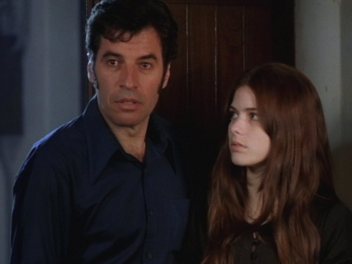

LUNA CALIENTE
| (Betacam, 4x40 min, color, 1999) Miniserie para la TV Globo Ramiro es un abogado de 40 años que está de vuelta al país tras ocho años de exilio en Francia. En una visita a la hacienda de amigos, Ramiro reencuentra a la bella y adolescente Elisa. Después de cenar, abalado por el calor, él se deja seducir por la chica que, años atrás, no pasaba de una niña. Y eso es solo el comienzo de una trama que marcará la vida de Ramiro para siempre. |
 Foto por José Tadeu Ribeiro: Paulo Betti e Ana Paula Tabalipa |
{kind=link}
Dirección: Jorge Furtado
Producción Ejecutiva: Nora Goulart y Luciana Tomasi
Guión: Jorge Furtado, Carlos Gerbase y Giba Assis Brasil
Argumento Original: Mempo Giardinelli
Dirección de Fotografia: José Tadeu Ribeiro
Dirección de Arte: Fiapo Barth
Música: Mariozinho Rocha
Dirección de Producción: Eduardo Figueira
Asistente de Dirección: Ana Luiza Azevedo
Una Producción TV Globo
Realización Casa de Cinema PoA
Elenco Principal:
Paulo Betti (Ramiro)
Ana Paula Tabalipa (Elisa)
Tonico Pereira (Bráulio Tennenbaum)
Paulo José (Inspetor Monteiro)
Fernanda Torres (Dora)
Chico Diaz (Gomulka)
Crítica
"Roteiro e Dirección primorosos marcaram a estréia da microssérie 'Luna caliente' anteontem. (...) Com Dirección geral de Jorge Furtado, o programa (...) teve uma sutileza rara, mas sempre muito bem-vinda na TV. 'Luna caliente' privilegiou exclusivamente os embates psicológicos, deixando de lado qualquer eventual excesso cenográfico ou delírios de fotografia. (...) Tudo é clima, como na emblemática seqüência da porta entreaberta que deixa Ramiro vislumbar a nudez de Elisa, antes de ele cometer estupro. (...) Tudo foi enxuto, sintético, indispensável. A Dirección de arte de Fiapo Barth merece destaque: passou longe do que se vê em produções situadasem décadas mais recentes, que mais costumam parecer o showroom de um brechó. E a fotografia de José Tadeu Ribeiro é pra lá de poética e sensível."
(Patrícia Kogut, O Globo, Rio de Janeiro, 17/12/99)
"Pode ter sido coincidência, mas também pode ter sido resultado de uma estratégia de marketing o fato de a Globo ter imprensado 1999 com suas duas melhores produções. Rompeu o ano com a microssérie 'O Auto da Compadecida' (...) e encerrou com 'Luna caliente', uma primorosa adaptação do romance do argentino Mempo Giardinelli. (...) O maior mérito de 'O Auto da compadecida' e 'Luna caliente' é mostrar para os que decidem a programação da TV deste país que há espectadores de bom gosto e que é possível conciliar qualidade e audiência."
(Leila Reis, O Estado de São Paulo, 18/12/99)
"Texto de primeira, elenco afinadíssimo, Dirección ousada e imagens impecáveis filmadas em película. O resultado não poderia ter sido melhor. (...) Após uma longa temporada sem minisséries, 'Luna caliente' veio como um 'presentaço' de Natal para o telespectador que já estava ávido por novidades."
(Luciana Barcellos, O Dia, Rio de Janeiro, 18/12/99)
"Si el argumento ya trae elementos para llamar la atención, la dirección de Jorge Furtado deja la miniserie aún más atrapante. Es un gran trabajo de dirección, atento a todos los detalles, que constituye escenas extremamente bien hechas. (...) quién acompañó el primer capítulo, difícilmente no se puso ansioso para saber qué realmente pasa y cuál será el final del lío en que se metió Ramiro."
(Flávio Amaral, Diário Popular, São Paulo, 17/12/99)
"'Luna caliente' es un oasis en medio a una programación dominada por programas como Línea directa. El trabajo es puro cine. (...) El calor que hace penar a los personajes es prácticamente 'sentido' por el espectador y ayuda en el suspenso y en la tensión. (...) Todos los personajes y situaciones parecen salidos de una película noir. (...) 'Luna caliente' merecería ser exhibido en cualquier sala de cine - de aquí y de cualquier país."
(Renato Delmanto, Jornal da Tarde, São Paulo, 19/12/99)
"A série 'Luna caliente' foi um refresco. Principalmente pela atuação de Tonico Pereira. Seu médico alcoólatra revoltado com a ditadura está irretocável. O primeiro capítulo de 'Luna' foi de Tonico."
(Gabriela Goulart, Jornal do Brasil, Rio de Janeiro, 18/12/99)
"Não tinha como dar errado. A minissérie 'Luna caliente' reuniu atores que sozinhos turbinam uma cena. (...) E foi pra lá de bom graças à forma sensível com que Jorge Furtado, Giba Assis Brasil e Carlos Gerbase recontaram a novela de Mempo Giardinelli. (...) Os roteiristas criaram a personagem de Fernanda Torres (no original ela é apenas uma citação de memória) para enfatizar a reviravolta na vida do professor e também as primeiras mortes da biografia de Ramiro, a de uma família de gatos quando era garoto. Mais um detalhe, mas são os detalhes que seduzem o telespectador."
(Cris Gutkoski, Zero Hora, Porto Alegre, 20/12/99)
"Una vez más la Red Globo demuestra la maestría de lo que es capaz cuando así le conviene: (...) 'Luna caliente' es excelente. Se equivocó, quién pensó que la micro-serie sería apenas una especie de Lolita a la brasileña. Sí, es la historia de un hombre maduro que se deja seducir por una chica - pero las semejanzas no paran por ahí. El drama inicial de Ramiro - que viola y supuestamente mata a la joven Elisa, matando también al padre de ella, enseguida - es el punto de partida para la tragedia de errores ( en la definición del propio Furtado) que se desarrolla entonces en un creciente sutil y implacable, tal y cual la vida real."
(Grace Perpétuo, Jornal de Brasília, 17/12/99)
"Esa agilidad imprimió la reciente 'Luna caliente' un clima de suspense y misterio dignos de Hitchcock. Ambientada en los años 70, la micro-serie tuvo un clima de realismo fantástico, con Ana Paula Tabalipa reapareciendo intacta, después de ser muerta dos veces, y varias alusiones a la tortura del régimen militar. Además, 'Luna' contó con un buen argumento e interpretaciones correctas de Paulo Betti y de Ana Paula, espectacular como la ninfomaníaca que enloqueció al personaje principal."
(Marcelo Lyra, O Estado de São Paulo, 26/12/99)
"Elisa, en una connotación subjetiva, es una vampira del sexo, que desde el primer momento en que surge frente del hombre maduro Ramiro (Paulo Betti, contenido es excelente, como el personaje pedía) lo desorienta. (...) En una lectura política, ya que la obra es ambientada en el comienzo de la década de 70, período mayor de la represión brasileña, época que los militares dictaban las reglas en la sociedad, Elisa representa las propias acciones de los militares que mataron y manipularon en nombre del orden. Solamente en el último capítulo quedó evidente que Elisa manipulaba a todos - en nombre de su deseo incontrolable."
(Sebastião Vilela Abreu, O Popular, Goiânia, 20/12/99)
Os espelhos e demais objetos sem vida que Monteiro tira da cartola (as calcinhas, o carro, o cadáver de Braúlio) são os focos de denúncia alçados à estatura de heróis em 'Luna Caliente'. Nestes corpos inanimados - que tomam vida movidos pelo desejo de esclarecimento, revelação e justiça, como a lua que intensifica as paranóias de Ramiro, ou Elisa, o cadáver que se recusa ao descanso -, Furtado parece depositar seu ideário repleto de ironia, neste painel crítico de uma época de perversão e hábitos obscuros. É um trabalho em que impera a consciência e a maturidade desse artista da maior importância para o nosso cinema."
(Fernando Verissimo, Revista Sinopse nº 4, março/2000)
15/12/1999